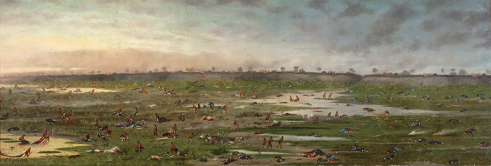
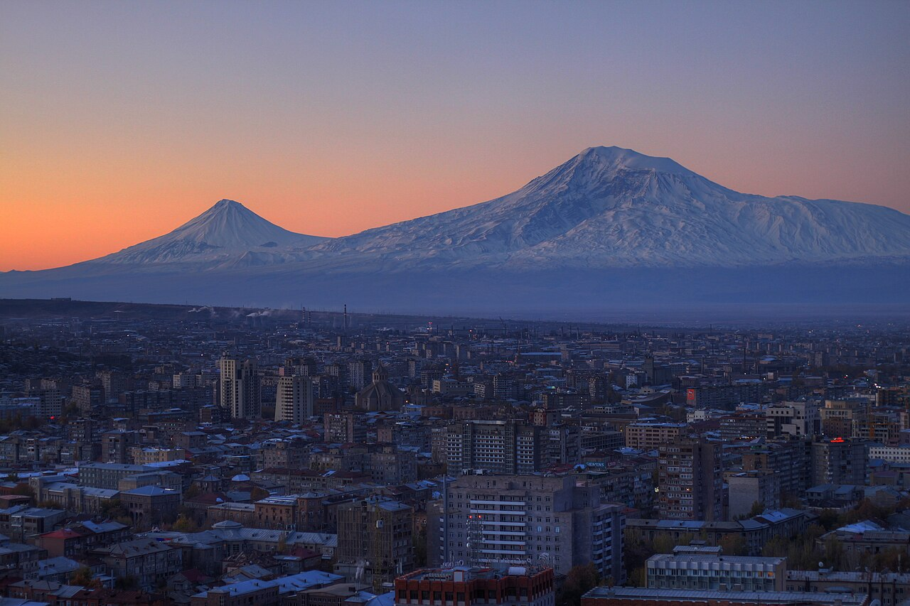
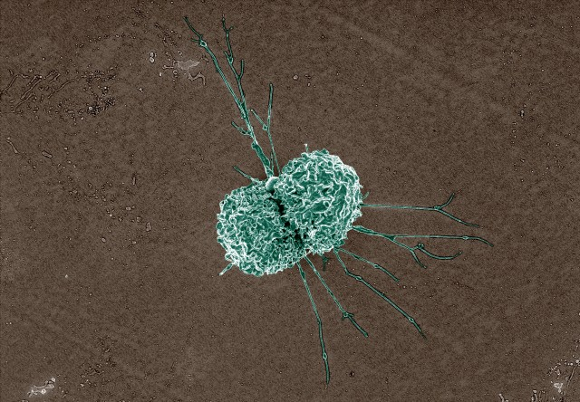
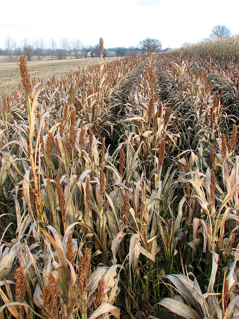
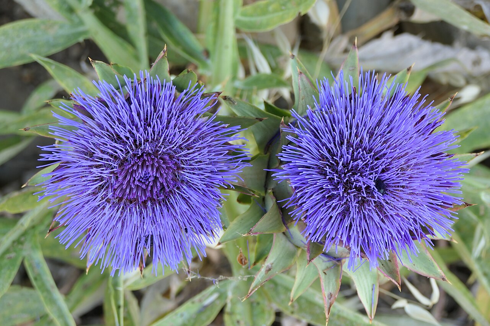
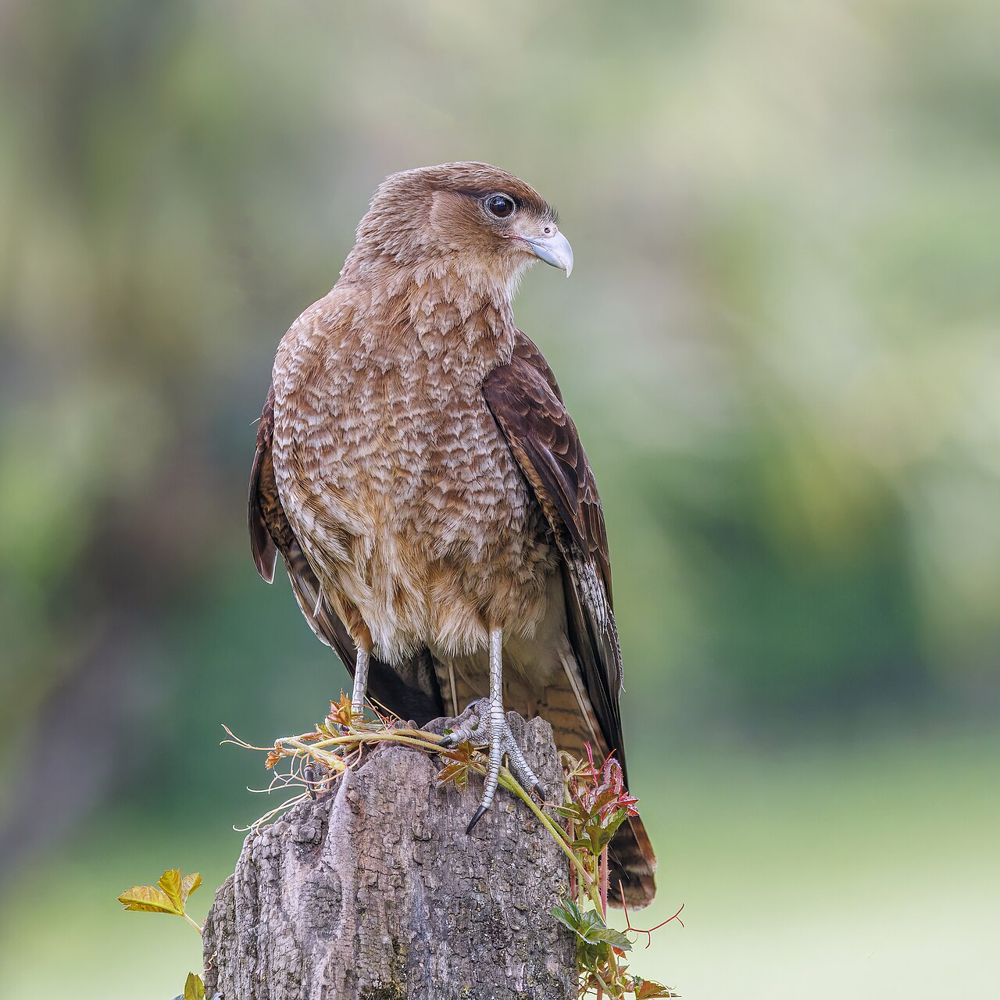
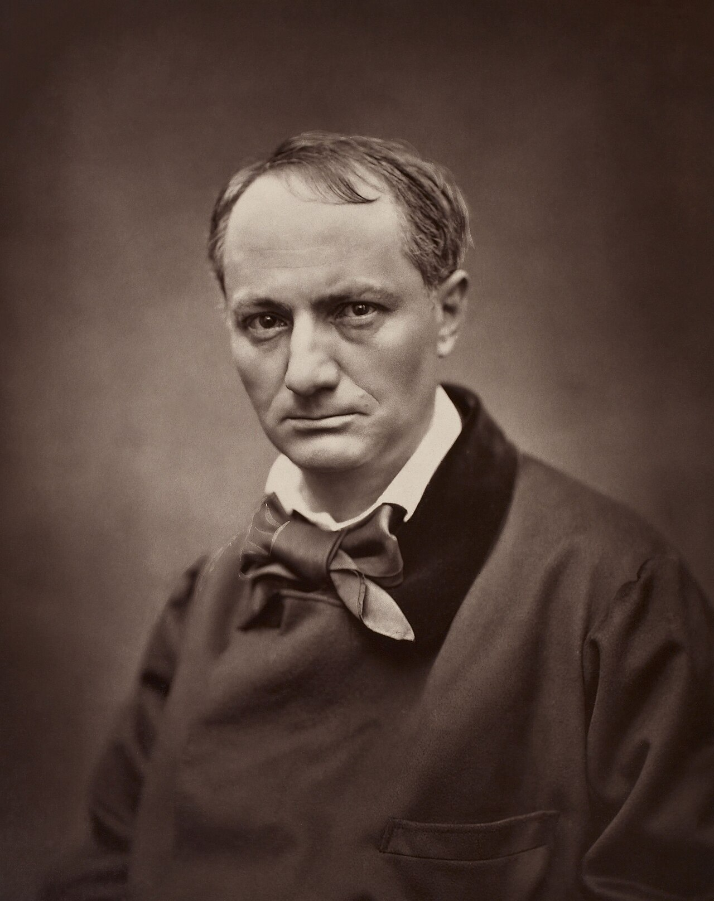
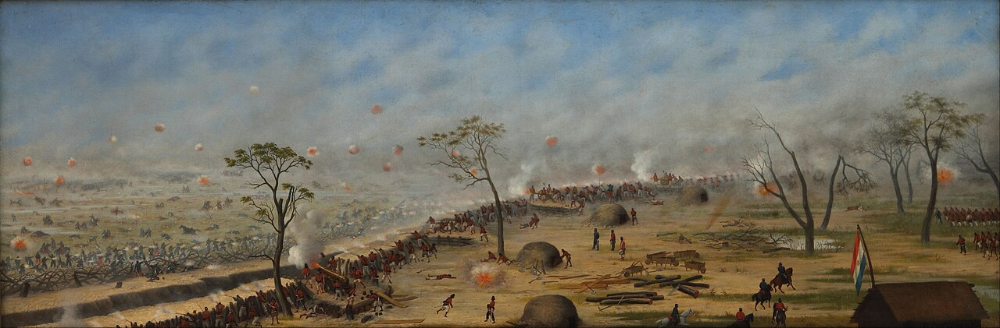

Lula.
diario de la mañana — el mundo, tu ciudad y lo que te asombra

Buen día. Lunes fresco y nublado, de 10° a 17°, sin lluvias en el pronóstico. Hoy arranca en Ereván la COP17 de biodiversidad: la primera revisión global de las 23 metas que el mundo se puso en 2022, y las primeras señales no son buenas. La ciencia de la semana empieza fuerte y es de inmunología pura: unos macrófagos del pulmón que, después de una infección parasitaria, protegen de una gripe letal sin bajar la carga viral. Es el mejor ejemplo que vas a ver de tolerancia a la enfermedad, que además es la palabra del día. Y el arte del lunes es un soldado que perdió la mano derecha en Curupaytí y pasó treinta años pintando esa batalla con la izquierda.
- El mundo en cinco minutos4'
- Argentina y Buenos Aires3'
- Ciencia: tolerar en vez de resistir9'
- Mirá a tu alrededor3'
- Receta de estación3'
- Un clásico en cinco minutos3'
- La palabra del día1'
- Le français du matin3'
- English corner4'
- Lunes de arte: Cándido López6'
- Hoy en la historia · un lugar2'
- Lo que me asombra hoy1'
- Pasatiempo: sudoku fácil10'
- Cuaderno: repaso, quiz y escritura5'
Empieza en Ereván la cumbre que tiene que explicar por qué no se cumplen las metas

Desde hoy y hasta el 30 de octubre sesiona en Ereván, Armenia, la COP17 del Convenio sobre la Diversidad Biológica, con delegaciones de cerca de 200 países y el lema «Taking Action for Nature». Es la primera revisión global del Marco Mundial de Biodiversidad de Kunming-Montreal, aprobado en 2022, que fijó 23 metas para 2030 —entre ellas la más famosa, proteger el 30 % de la tierra y del mar—. En la agenda provisional también están el marco de monitoreo, la movilización de recursos, el mecanismo financiero y el programa de trabajo del artículo 8(j), sobre pueblos indígenas y comunidades locales.
Sobre cuánto se avanzó, las lecturas no coinciden: hay informes que dicen que se tomaron medidas en las 23 metas pero que menos de la mitad de las metas nacionales están en camino, y evaluaciones preliminares, más duras, que hablan de incumplimiento en 22 de 23. Esa diferencia es, en sí misma, el tema de la cumbre: sin un marco de monitoreo acordado, cada quien mide como quiere.
Por qué importa: la Argentina es parte del Convenio y tiene que presentar metas nacionales. Y para vos, en concreto: el acceso a recursos genéticos y el reparto de beneficios —lo que se negocia en el Protocolo de Nagoya y ahora en la información de secuencias digitales (DSI)— define si un laboratorio argentino puede usar, secuenciar y patentar material biológico de su propio país, y en qué condiciones. Es derecho de biotecnología aplicado.
Brasil, rumbo al balotaje del domingo
Lula encabezó actos de campaña de cara a la segunda vuelta del 25 de octubre contra Flávio Bolsonaro. Es la elección que va a definir el principal socio comercial de la Argentina para los próximos cuatro años.
China creció más de lo esperado
El PBI chino subió 4,5 % interanual en el tercer trimestre, por encima de lo que preveía el mercado. En paralelo, el Brent retrocedió desde los US$ 110 a los que había trepado por las amenazas del fin de semana: el mismo shock petrolero del que habló el FMI la semana pasada.
Y además
En Ucrania, dos muertos y al menos 17 heridos en una nueva ronda de ataques cruzados contra infraestructura energética. Macron empezó en Kuwait una gira por el Golfo. En Albania siguen, por quinto día, las protestas estudiantiles. Y en Francia, resaca del sábado: 1.800 detenidos.
El Banco Central compra, el riesgo país no afloja
La semana abre con el dólar oficial tomando como referencia los $1.535 del viernes y el mayorista en $1.518. El dato bueno para el Gobierno: el Banco Central acumula compras por US$ 982 millones en lo que va de octubre y las reservas volvieron a superar los US$ 50.000 millones. El dato incómodo: el riesgo país sigue alto —entre 620 y 648 puntos básicos según la fuente que mires, una diferencia que conviene tener presente— y los bonos globales abren en baja.
Por qué importa: con el riesgo país en ese nivel, volver a los mercados voluntarios es caro, y el mercado ya está mirando 2027, cuando hay vencimientos grandes por cubrir. De ahí la insistencia oficial con el superávit: septiembre cerró con superávit financiero, y la inflación núcleo dio por debajo del 2 % por quinto mes seguido.
Agenda
Milei viaja a España con el canciller Quirno, con actividades académicas en Madrid. Y en ANSES rige el refuerzo previsional: la mínima quedó en $435.748,51, más un bono de $70.000 para quienes cumplen las condiciones.
Para hacer en la ciudad
- Museo Nacional de Bellas Artes (Del Libertador 1473, martes a viernes de 11 a 20, sábados y domingos de 10 a 20, entrada gratuita): ahí está la serie de la Guerra del Paraguay de Cándido López, la sección de hoy. En el primer piso sigue hasta el 15 de noviembre Código natal, de Adriana Bustos.
- XX Bienal Internacional de Arquitectura, eje HABITAR, con sede en el Centro Cultural Recoleta (Junín 1930).
- Viva Frida, en el Malba (Figueroa Alcorta 3415), hasta el 15 de marzo de 2027.
- Para agendar: arteBA, del 30 de octubre al 1 de noviembre en La Rural.
Los horarios cambian: si vas, chequeá la web del museo antes de salir.
Los ratones que sobreviven a la gripe sin matar menos virus
La defensa antiinfecciosa tiene dos estrategias que se confunden todo el tiempo: resistencia (bajar la carga del patógeno) y tolerancia a la enfermedad (aguantar la misma carga con menos daño). Casi toda la inmunología y casi toda la farmacología apuntan a la primera. Este trabajo, del laboratorio de Kamal Khanna (NYU), con Payal Damani-Yokota como primera autora, es de los que muestran la segunda con todas las letras, y lo publicó Nature el 30 de septiembre.

El experimento
- El diseño es heterólogo: ratones infectados primero con el nematodo Nippostrongylus brasiliensis —que hace su pasaje por el pulmón y deja una respuesta de tipo 2 clásica—, un descanso de varias semanas, y recién entonces el desafío con influenza H1N1 a dosis letal.
- Quién protege: no los macrófagos alveolares, sino los NAM, macrófagos intersticiales asociados a nervios y vías aéreas, que se expanden después de la infección parasitaria y quedan en el tejido.
- Lo contraintuitivo: los ratones protegidos no tienen menos virus ni mejores respuestas T. Lo que tienen es menos inmunopatología, más eferocitosis (la limpieza de células muertas por apoptosis) y reparación más rápida del tejido.
- El programa molecular: los análisis genómicos apuntan a un eje IL-4 → STAT6 → PPARγ con inducción de ARG1, es decir, un reprogramado de cromatina que deja a los NAM en un estado reparador. Es entrenamiento local, en el tejido, no en la médula.
- La idea en una línea: una infección vieja de un tipo (helmíntica, tipo 2) le cambia al pulmón la forma de morirse —o de no morirse— frente a una infección nueva de otro tipo (viral, tipo 1).
Lectura crítica
- Es ratón, y es un modelo muy limpio: una sola especie de helminto, una sola cepa viral, dosis y tiempos elegidos. En personas la historia inmunológica es un acumulado desordenado de décadas; no se trasplanta así nomás.
- El riesgo del espejo: si el entrenamiento tipo 2 mejora la tolerancia, puede empeorar otras cosas. El mismo eje IL-4/STAT6 está en el asma y en la fibrosis, y ARG1 compite con la óxido nítrico sintasa por la arginina: menos NO puede significar peor control de otros patógenos.
- Lo que no leí: trabajé con el resumen y con el preprint; no pude abrir las figuras, así que no te doy n por grupo ni sobrevidas exactas. Cuando las veas, fijate sobre todo en los controles de carga viral (que la protección sea sin diferencia de títulos es el corazón del paper) y en los experimentos de depleción o transferencia de NAM.
- Causalidad: la asociación con el eje STAT6/PPARγ/ARG1 es genómica; lo que la convierte en mecanismo son los knockouts condicionales. Mirá cuáles hicieron y en qué célula.
La conexión con lo que estudiás
Esto reordena la famosa hipótesis de la higiene: no se trata solo de que los helmintos «calmen» el sistema inmune, sino de que dejan macrófagos de tejido reprogramados, con marcas de cromatina que cambian la respuesta a una infección completamente distinta meses después. Es inmunidad entrenada, pero local y con signo contrario al que se estudia con BCG o β-glucanos (que entrenan para resistir más). Y abre un blanco terapéutico raro: en vez de un antiviral, un inductor de tolerancia para la fase en la que el paciente no se muere del virus sino de su propia respuesta. Acordate de esto cuando leas sobre dexametasona en COVID grave: la misma lógica, con un martillo mucho menos fino.
Damani-Yokota P, Yordanov Y, … Khanna KM. «Type 2 immune history trains lung macrophages for viral disease tolerance». Nature (30 de septiembre de 2026), doi:10.1038/s41586-026-11060-y · preprint y versión extendida en PMC12919208
Biotec en el mundo real · Bioheuris, editar la planta en vez de agregarle genes

_-_geograph.org.uk_-_1070422.jpg){kind=link}
Bioheuris es una startup de Rosario que combina biología sintética y edición génica para hacer cultivos tolerantes a herbicidas. La diferencia con el modelo clásico es regulatoria antes que técnica: no insertan un transgén de otra especie (como el cp4 epsps de la soja RR), sino que editan el gen propio de la planta que codifica la enzima blanco del herbicida, para que la proteína siga funcionando con el producto aplicado.
- Por qué eso cambia todo: la Argentina fue el primer país del mundo en darse una norma para nuevas técnicas de mejoramiento (Resolución 173/2015): si el producto final no tiene ADN foráneo, la CONABIA puede dictaminar caso por caso que no es un OGM y el evento sale por la vía convencional, con años y millones de dólares menos de regulatorio.
- Los cultivos: arrancaron por soja y sorgo y después sumaron arroz, algodón y alfalfa, editando germoplasma elite (el material que ya rinde bien), que es donde está el negocio.
- La salida al mundo: en 2025 firmaron un acuerdo con la African Agricultural Technology Foundation para ensayos con sorgo tolerante a herbicidas en África, contra una maleza que la prensa describe como la que afecta la alimentación de unos 300 millones de personas.
- Lo que hay que mirar con ojo crítico: hacer cultivos tolerantes a herbicidas acelera la rueda de la resistencia en las malezas, igual que pasó con el glifosato. La respuesta de la empresa es apilar tolerancias a varios modos de acción; si eso alcanza o solo corre el problema unos años es una discusión abierta y honesta.
- Salida laboral: edición génica en plantas, cultivo in vitro y transformación, fenotipado, regulatorio ante CONABIA y SENASA.
Ciencia en la vida cotidiana · Por qué el café del lunes funciona (y por qué cada vez menos)
La cafeína no te da energía: te saca el freno. Mientras estás despierta se acumula adenosina en el cerebro, producto del consumo de ATP, y actúa sobre los receptores A1 y A2A bajando la actividad neuronal y aumentando la presión de sueño. La cafeína es un antagonista competitivo de esos receptores: tiene la estructura parecida, se mete en el sitio y no deja entrar a la adenosina. La señal de cansancio sigue ahí; lo que falla es la lectura.
Los números: la vida media en plasma es de unas 5 horas, con una variabilidad enorme entre personas por polimorfismos del CYP1A2, que la metaboliza (hay metabolizadoras rápidas y lentas), y se alarga con el embarazo y con los anticonceptivos orales. Por eso un café a las seis de la tarde todavía tiene media dosis dando vueltas a las once. Y por eso también el efecto se gasta: el bloqueo crónico induce más receptores de adenosina, así que hace falta la misma dosis para sentirse normal, y la abstinencia —con más receptores y la adenosina libre— da dolor de cabeza por vasodilatación. El truco no es tomar más, es tomarlo cuando sirve.
El cardo, que cuaja la leche, y el chimango, que está en todos lados



_female_Puerto_Varas.jpg){kind=link}
La flor: cardo
| Nombre científico | Cynara cardunculus (Asteráceas): la misma especie que el alcaucil, en su versión silvestre. Llegó con los españoles y tapizó la pampa; Sarmiento la usó como símbolo del desierto en el Facundo. |
|---|---|
| Dónde | Banquinas, campos sin trabajar, terraplenes del tren, los bordes de la Reserva Ecológica. En la ciudad, cualquier baldío grande. |
| Por qué ahora | Entre octubre y diciembre levanta la vara floral y abre capítulos violeta de hasta 7 cm, llenos de abejas y abejorros. Después se vuelve un plumero: las semillas vuelan con vilano, como las del diente de león. |
| El dato que te sirve | Los estigmas secos de la flor son cuajo vegetal: contienen cardosinas, proteasas aspárticas que cortan la κ-caseína igual que la quimosina del estómago del ternero. Con eso se hacen quesos como el Serra da Estrela portugués o la Torta del Casar. Cuajo sin animal, 2.000 años antes de la quimosina recombinante. |
El ave: chimango
| Nombre científico | Milvago chimango (Falcónidas, el grupo de los caranchos) |
|---|---|
| Cómo reconocerlo | Marrón claro y parejo, con la cola barrada y una mancha clara en el extremo del ala que se ve al volar. Más chico que el carancho y mucho más confiado. El grito es un chillido áspero y descendente del que viene el nombre. |
| Por qué ahora | Está todo el año, pero en primavera anida y se lo ve en pareja, haciendo vuelos bajos sobre los parques y las canchas. |
Tu misión de hoy
Budín de espinaca
Se hace mientras estudiás y se come frío al día siguiente. Rinde para dos cenas.
Ingredientes
- 2 atados de espinaca (o 500 g)
- 1 cebolla chica y 1 diente de ajo
- 3 huevos
- 100 g de queso rallado o de cuartirolo en cubos
- 100 ml de leche, sal, pimienta y nuez moscada
Pasos
- Horno a 180 °C. Blanqueá la espinaca 1 minuto en agua hirviendo con sal, escurrila y apretala fuerte para sacarle el agua. Picala.
- Rehogá la cebolla y el ajo hasta que estén transparentes.
- Batí los huevos con la leche, el queso, sal, pimienta y nuez moscada. Sumá la espinaca y la cebolla.
- Budinera aceitada, 35 a 40 minutos, hasta que el centro esté firme. Dejalo reposar 10 minutos antes de desmoldar.
La química de la receta
Qué hace el blanqueado: el agua hirviendo inactiva en segundos las enzimas de la hoja (polifenol oxidasa, peroxidasa, lipoxigenasa) y expulsa el aire de los espacios intercelulares, lo que hace que el verde se vea más intenso de golpe. Pero el reloj corre: con calor prolongado y en medio ácido, el Mg²⁺ central de la clorofila se intercambia por dos H⁺ y da feofitina, de color verde oliva apagado. Un minuto y afuera, sin tapa (para que los ácidos volátiles se escapen).
Por qué hay que exprimirla: la espinaca es más del 90 % agua. Si no la sacás, esa agua se libera en el horno y diluye la red de proteína: el budín queda aguado y no corta. Es el error número uno de la receta.
Qué sostiene el budín: el huevo. Al calentarse, la ovoalbúmina y las proteínas de la yema se desnaturalizan y forman una red tridimensional que atrapa el agua y la grasa. La leche diluye lo justo para que la red quede tierna. Pasado de horno, la red se contrae y expulsa agua (sinéresis): eso es el charquito en la fuente y la textura de goma. Por eso 180 °C y no más.
La nuez moscada no es decorativa: la espinaca tiene mucho oxalato, que precipita con el calcio de la leche y del queso en cristalitos finos, responsables de esa sensación de dientes ásperos. No la saca nadie, pero el aroma distrae; y el calcio del queso se queda con parte del oxalato antes de que llegue a tu intestino.
Baudelaire, «Embriagáos» (1869)
Un poema en prosa de tres párrafos, para un lunes. Traducción propia.

Hay que estar siempre ebrio. Todo está ahí: es la única cuestión. Para no sentir el horrible peso del Tiempo que te rompe los hombros y te dobla contra la tierra, tenés que embriagarte sin tregua.
¿Pero de qué? De vino, de poesía o de virtud, como quieras. Pero embriagate.
Y si alguna vez, en la escalinata de un palacio, sobre el pasto verde de una zanja, en la soledad opaca de tu cuarto, te despertás con la embriaguez ya disminuida o desaparecida, preguntale al viento, a la ola, a la estrella, al pájaro, al reloj, a todo lo que huye, a todo lo que gime, a todo lo que rueda, a todo lo que canta, a todo lo que habla: preguntales qué hora es. Y el viento, la ola, la estrella, el pájaro y el reloj te van a contestar: «¡Es la hora de embriagarse!».
Para entrar al poema
- Qué es un poema en prosa: Baudelaire inventó el género en estos textos cortos, publicados sueltos en diarios y reunidos después de su muerte. Quería, escribió, «una prosa poética, musical sin ritmo y sin rima», capaz de seguir los movimientos de la vida en una ciudad grande. París recién reconstruida por Haussmann era esa ciudad.
- No es una apología del vino: fijate en la lista: vino, poesía o virtud. Lo que propone es una intensidad —cualquiera— contra el tiempo que pasa sin que pase nada. El «spleen» del título es exactamente eso: el tedio que pesa.
tolerancia sustantivo
latín tollere (levantar, cargar) → tolerare (soportar un peso) → castellano tolerancia · francés tolérance · inglés tolerance
Antes que una virtud cívica, tolerare era un esfuerzo físico: aguantar un peso encima. De la misma raíz indoeuropea (*telh₂-, «cargar») viene Atlas, el titán condenado a sostener el cielo sobre los hombros, y también latus, el participio de ferre, que nos dejó dilatar y relativo. En el siglo XVI la palabra se volvió política —la tolerancia religiosa, después de un siglo de guerras— y recién ahí perdió el cuerpo.
Pero lo recuperó en tus materias, y con una precisión hermosa. En inmunología, la tolerancia es no responder a lo propio (tolerancia central en el timo, periférica en los tejidos), y la tolerancia a la enfermedad de la ciencia de hoy es aguantar la misma carga de patógeno con menos daño: exactamente «soportar el peso». En farmacología, la tolerancia es necesitar más dosis para el mismo efecto, como los receptores de adenosina del café. Y en ingeniería y en el laboratorio, una tolerancia es cuánto se le permite desviarse a una medida: ±0,1 mL en una pipeta. La misma idea en tres idiomas y en cuatro disciplinas: cuánto podés aguantar sin romperte.
Au café
La semana de pedir cosas. Arrancamos con el café, que es lo primero que vas a necesitar.
— Bonjour ! J'ai faim.
— Je voudrais un café et un croissant, s'il vous plaît.
— C'est combien ?
— Quatre euros.
— Merci, au revoir !
| J'ai faim | Tengo hambre [ye FAN] |
|---|---|
| Je voudrais… | Quisiera… [yə vu-DRÉ] |
| un croissant | una medialuna [an krua-SAN] |
| s'il vous plaît | por favor [sil vu PLE] |
| C'est combien ? | ¿Cuánto es? [se kom-BIÁN] |
Un truco
No pidas con je veux («quiero»): suena a chico caprichoso. Je voudrais es el condicional de vouloir y es la forma educada por defecto, el equivalente de nuestro «quisiera» o «te pediría». Con eso y s'il vous plaît ya pedís cualquier cosa en Francia. Y ojo con la liaison: vous + vocal se pega (vous_avez suena «vu-za-VE»).
À toi:
The summit that has to mark its own homework
Four years after governments signed up to the Kunming-Montreal framework and its 23 targets for 2030, delegates from some 200 countries are gathering in Yerevan to take stock. The exercise is billed as the first global review of collective progress, which is a diplomatic way of saying that everyone now has to show their working.
Early assessments make for uncomfortable reading, and they do not agree with one another. One stocktake finds that action of some sort has been taken on all 23 targets, while fewer than half of the national targets are on track. A harsher preliminary reading suggests governments are falling short on 22 of the 23. The discrepancy is not a detail: without an agreed monitoring framework, countries are free to measure themselves against yardsticks of their own choosing, and comparisons fall apart.
Money, as ever, looms over the talks. Resource mobilisation and the financial mechanism are formal agenda items, and the gap between what has been pledged and what has been disbursed is the sort of thing that can derail a fortnight of negotiation. So is the question of digital sequence information — who may use, and profit from, the genetic data of species found within another country's borders.
None of this will make headlines the way a climate COP does. Biodiversity loss is slower, more local and harder to photograph than a heatwave. But the targets at stake here are the ones that decide whether a wetland outside your city is still there in ten years.
- to sign up to — suscribir, comprometerse con
- to take stock — hacer un balance
- to be billed as — presentarse como, anunciarse como
- to show one's working — mostrar los pasos, rendir cuentas de cómo se llegó
- to make for uncomfortable reading — ser una lectura incómoda
- to be on track — ir en camino, cumplir lo previsto
- to fall short on — quedarse corto en
- a yardstick — una vara de medir, un criterio
- to loom over — pesar sobre, cernirse
- to derail — descarrilar, hacer fracasar
Your turn (answer in English):
Cándido López: treinta años pintando con la mano que le quedó

Cándido López (1840-1902) era un retratista y fotógrafo que se anotó como voluntario en la Guerra de la Triple Alianza. Dibujaba en el campamento, entre marcha y marcha, con la idea de pintar después. En Curupaytí, el 22 de septiembre de 1866, una granada le destrozó la mano derecha; la gangrena obligó a amputarle el antebrazo. Tenía 26 años. Dos días antes de la batalla había usado esa mano por última vez para dibujar los preparativos del asalto.
Lo que hizo después es lo que lo vuelve único: aprendió a pintar con la izquierda y dedicó más de treinta años a reconstruir la campaña a partir de sus propios croquis de campo. No pintó alegorías ni héroes a caballo: pintó el terreno, con exactitud de cartógrafo y figuras diminutas, cientos de soldaditos del tamaño de una uña en un paisaje enorme y chato. La serie quedó en la familia, que la donó al Museo Nacional de Bellas Artes en los años sesenta; ahí la podés ver gratis.
Cómo mirarla
- Buscá el horizonte alto. Casi siempre está arriba de la mitad de la tela, con un formato apaisado, larguísimo. Eso le deja todo el espacio al suelo: el tema real de estos cuadros es la tierra del Paraguay, el estero, el camalote, el humo.
- Mirá de lejos y después de muy cerca. De lejos es un paisaje tranquilo. De cerca aparecen las escenas: los heridos, los que cavan, los que cocinan, los muertos en el barro. La violencia está puesta en la escala, no en el gesto.
- Fijate en el dato. Cada tela lleva su propia leyenda: lugar, fecha, hora, unidades. López pintaba como quien declara ante un tribunal. Por eso la serie funciona también como documento, aunque sea memoria de uno solo.
- Y pensá en la mano. No hay nada torpe en esa pintura. Lo que se ve no es una limitación superada: es alguien que eligió una técnica minuciosa, lenta, obsesiva, justo cuando tenía todos los motivos para elegir lo contrario.
Lo llamaron «el manco de Curupaytí». Algunas de sus naturalezas muertas las firmó «Zepol»: su apellido dado vuelta, como la mano.
19 de octubre de 1967: el Nobel para Miguel Ángel Asturias
La Academia Sueca anunció ese día que el Premio Nobel de Literatura era para el guatemalteco Miguel Ángel Asturias, el segundo latinoamericano en recibirlo después de Gabriela Mistral. Asturias había escrito El señor Presidente, la novela del dictador como figura de pesadilla, y Hombres de maíz, donde el Popol Vuh y la cosmovisión maya entran en la prosa y la deforman. Había traducido el Popol Vuh al castellano desde una versión francesa, en París, en los años veinte. Estaba exiliado y escribía desde Europa.
Su premio abrió la puerta grande: tres años después, el Nobel fue para Neruda, y el «boom» latinoamericano ya era un fenómeno mundial.
El lugar: Ciudad de Guatemala
| Dónde | En un valle a 1.500 m de altura, rodeada de volcanes (el Agua, el Fuego, el Pacaya, todos a la vista en un día claro). |
|---|---|
| Por qué ahí | Es la cuarta capital del país: las anteriores fueron destruidas por terremotos y erupciones. La actual se fundó en 1776, después de que los sismos de 1773 arruinaran Antigua. |
| Qué ver | El Museo Popol Vuh, con una de las mejores colecciones de arte maya; y a una hora, Antigua, Patrimonio de la Humanidad. |
Hay unos tres billones de árboles en el planeta, y había el doble
Hasta 2015 la estimación global de árboles era de unos 400.000 millones, calculada por superficie. Un equipo liderado por Thomas Crowther combinó más de 400.000 mediciones de densidad hechas a pie, en el suelo, con imágenes satelitales y modelos por bioma, y publicó en Nature una cifra muchísimo más alta: 3,04 billones de árboles (3,04 × 10¹²). Eso da más de 400 por persona.
El mismo trabajo trajo el otro número, el que importa hoy que empieza la COP17: desde el comienzo de la agricultura, hace unos 12.000 años, la cantidad de árboles del planeta cayó cerca del 46 %. No es que falte un bosque: falta casi la mitad de todos los árboles que hubo. Y la pérdida sigue, a razón de unos 15.000 millones de árboles por año, contra unos 5.000 millones que se recuperan.
Para empezar la semana
Completá cada fila, cada columna y cada caja de 3×3 con los números del 1 al 9, sin repetir. Tiene una sola solución.
Repaso y quiz de la mañana
Repaso de idiomas
Quiz
En el trabajo de hoy, los ratones protegidos de la gripe tenían…
¿Qué células hacen esa protección?
El programa molecular que los deja en estado reparador pasa por…
¿Qué hace la cafeína?
¿Qué diferencia a Bioheuris del modelo transgénico clásico?
Los estigmas secos del cardo sirven para…
¿Por qué hay que exprimir la espinaca del budín?
La COP17 que empieza hoy es la del convenio sobre…
«Je voudrais» se usa porque…
«To take stock» significa…
Escritura: tres líneas para hoy
- Quiz: misma carga viral y menos daño · los NAM · IL-4/STAT6/PPARγ y ARG1 · bloquea los receptores de adenosina · edita el gen propio de la planta · cuajar leche · porque el agua diluye la red del huevo · diversidad biológica · es el condicional · hacer un balance.
- Repaso: je suis prête · je prends le métro · je me lève · estar de acuerdo · sentir el apretón económico · algo muy poco probable.
- Francés 2: «J'ai faim. Je voudrais un croissant, s'il vous plaît.»
- English 1: Because without an agreed monitoring framework each country measures itself against its own yardstick, so the assessments cannot be compared.
Sudoku:
Fuentes de esta edición
- COP17: agenda provisional del CDB · EFE vía Infobae · ficha de la cumbre
- Mundo: EFE Internacional, 19 de octubre · Euronews
- Argentina: Noticias Argentinas: dólar y mercados · Infobae: las consultoras · Infobae: ANSES
- Clima: La Nación (SMN) · Canal 26
- Ciencia: Nature: tolerancia a la enfermedad y macrófagos del pulmón · versión en PMC
- Biotec: Revista InterNos: Bioheuris · Rosario3: el acuerdo con África · CONABIA
- Arte e historia: MNBA: catálogo de Cándido López · Infobae: el manco de Curupaytí · Nobel: Miguel Ángel Asturias
- Asombro: Crowther et al., «Mapping tree density at a global scale», Nature (2015)
Mañana, martes: moda, con las grandes casas y las pasarelas. — Lula.